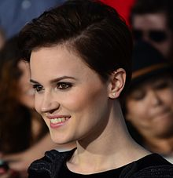

Early Life
Tobias was born to Marcus and Evelyn Eaton in the Abnegation faction. His father was said to have noticed his Divergence at a young age and became observant of him since then. Evelyn supposedly died when Tobias was young, leaving Tobias alone with Marcus. Tobias became a victim to his father's cruelty. During his aptitude tests he got an Abnegation result, but chose Dauntless as his faction at the Choosing Ceremony to escape his father. During his initiation training, when he went through his fear landscape, it was discovered Tobias only had four fears, with the average being between ten and fifteen. As a result, his instructor, Amar, started calling him "Four." Tobias accepted it so he could escape his past. He finished first in his initiation class, and chose to work in the intelligence sector of Dauntless, but also decided to train the initiates.
Four is first seen helping Tris get out of the net after she jumps through the hole into the Dauntless compound. After all the initiates have come in, he introduces himself as the instructor to the transfers.
Four show Dauntless Transfers fighting technique.
Four supervises their training, showing them how to fight with weapons, as well as hand-to-hand combat. Tris' fellow initiates, Christina and Will, both comment that Four seems like someone to stay away from. Four tries to help Tris out with her combat abilities, though Tris is wary to trust him, initially. During Tris' first fight, against Peter Hayes, when Tris starts being beaten badly, she notices Four leaving the room. When she comments to him about this, he says it "wasn't something I wanted to watch."
About The Author

Veronica Anne Roth (born August 19, 1988) is an American novelist and short story writer, known for her bestselling Divergent trilogy.
Veronica Roth was born on August 19, 1988 in New York City, and was raised primarily in Barrington, Illinois. Her mother, Barbara Ross, is a painter who resides in Barrington. She is the youngest of three children. Her parents divorced when she was five years old, and her mother has since remarried to Frank Ross, a financial consultant for landscaping companies. Her brother and sister live in the Chicago area.
Roth wrote her first book, Divergent, while on winter break in her senior year at Northwestern University, and found an agent by the following March. Her career took off rapidly with the success of her Divergent, with the publishing rights sold before she graduated from college in 2010 and the film rights sold mid-March 2011, before the novel was printed in April 2011. Her first two novels sold over five million copies worldwide by fall 2013, just as the film based on the first novel was wrapping up.